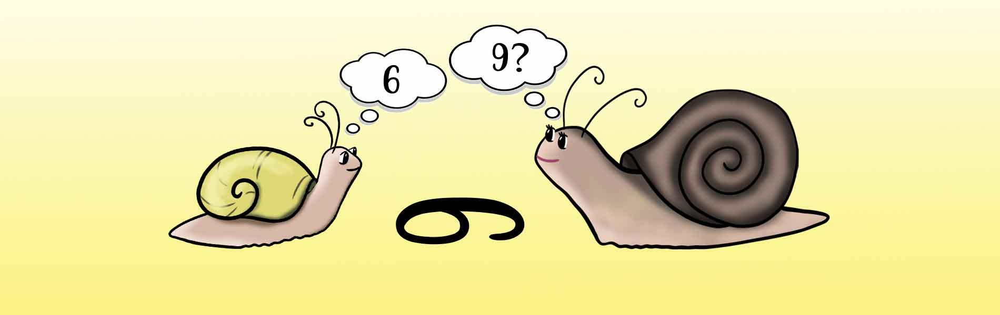
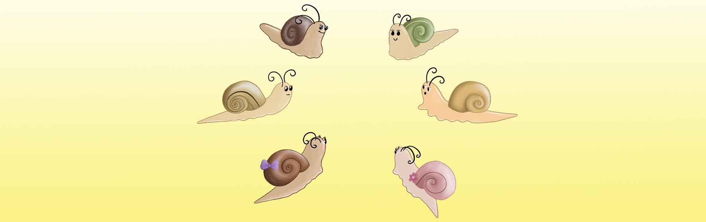
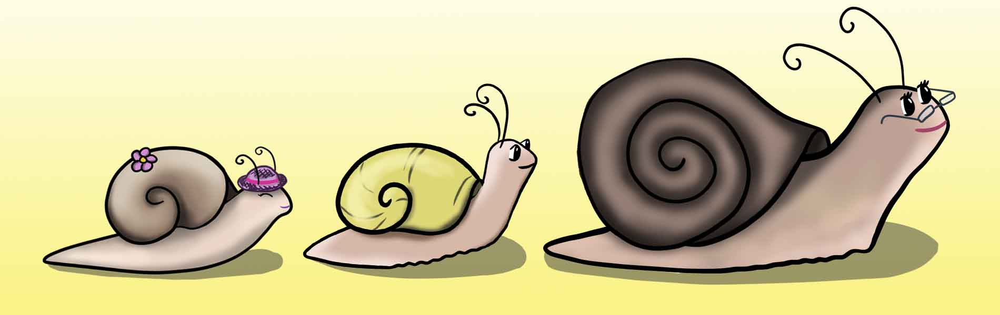

Služby
Pro každého jsou nejdůležitější vztahy s těmi nejbližšími, ve vlastní rodině. "Jinakost" v jakékoli podobě do rodiny vnáší odlišné prvky, u kterých nezbývá než se s nimi vyrovnat. A pak postupně v rozmanitosti objevit krásu.
Rosteme s Jinakostí
Projekt je zaměřený na rodiče dětí se speciálními potřebami (Aspergerův syndrom, ADHD, vysoko/středně funkční autismus, mimořádné nadání a jiné nebo s podezřením na některou z diagnóz) - na rodiče děti s „jinakostí“.
Ne vždy jsme připraveni na cesty, které děti s „jinakostí“ potřebují. Jako rodiče se pak dostáváme pod veliký tlak od svého okolí, ale také od našich vlastních přesvědčení, která nám diktují, jak „to“ má být správně.
Pojďme se společně učit:
- Přijímat naše dítě i s tím, co vnímáme jako nedostatky.
- Obrnit se proti "dobrým radám" okolí, aby nám neubližovaly.
- Komunikovat s empatii a respektem k druhému i sobě.
- Budovat naši důvěru ve schopnosti dítěte a předávat mu zodpovědnost.
- Posilovat naši odvahu hledat pro dítě neprošlapané cesty a tím ho podporovat v jeho jedinečnosti.
Nebude to jenom o vztahu k dítěti, ale především o nás, rodičích. Společně pak Po-Vy-Rosteme s Jinakostí.
Tématická setkání rodičů
.. protože výchova dítěte s "jinakostí" musí být většinou jiná, než známe od vlastních rodičů
Nejbližší: 21.12.2020 - O předvídatelnosti
Rosteme s Jinakostí: Komunikace (seminář pro rodiče, 6 setkání)
.. protože komunikace je základ vztahu (i) s dítětem
Seberozvojový seminář pro rodiče, kteří mají zájem o systematičtější práci „na sobě“ v uzavřené skupině. Zaměříme se na komunikaci, ve které jsou naši děti často oslabeny. Komunikační dovednosti rozvineme u sebe a změnu tím přineseme i do našich rodin. Setkáme se ve čtvrtky, vždy po 14 dnech. Začínáme: 24.9.2020
Seberozvojová a podpůrná skupina pro rodiče
.. protože druzí nám mohou být inspirací a vzájemně si dáváme pochopení
Skupina pro rodiče, kteří se chtějí potkat s těmi, kteří procházejí podobnou cestou. Nejbližší: 7.12.2020
Individuální konzultace
.. protože situace jsou někdy natolik zamotané, že se nám je nedaří rozplést
Osobní nebo online setkání pro toho, kdo si chce individuálně popovídat.
- Rosteme s Jinakostí: Komunikace
(seminář pro rodiče, 6 setkání) - Seberozvojová a podpůrná skupina
(pro rodiče dětí s Jinakostí) - Rosteme s Jinakostí
(tématická setkání rodičů)